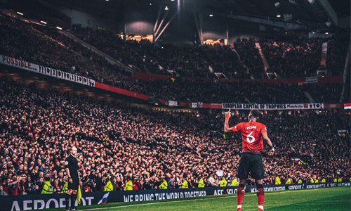
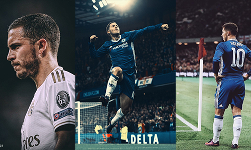
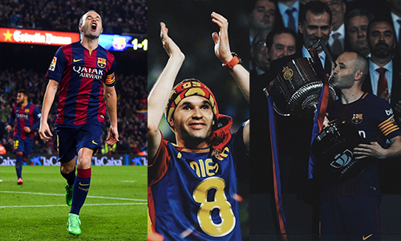
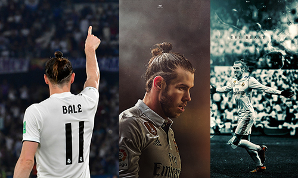
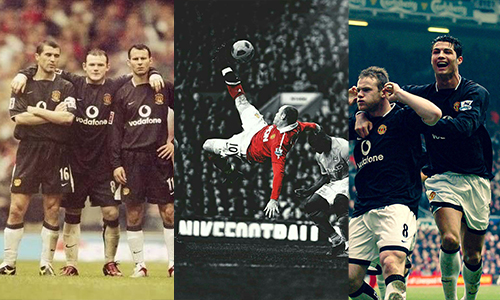
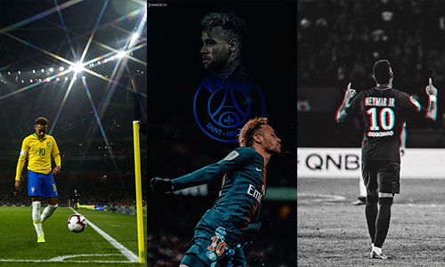
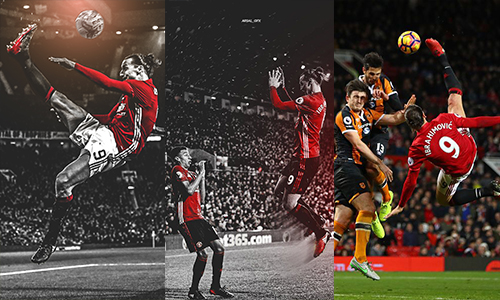
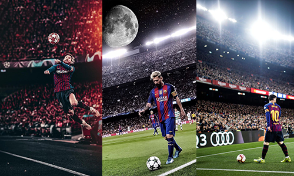
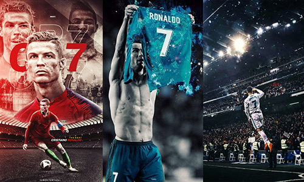

<?php
include_once 'header.php'
?>

<section? class="bola1">
    <div class="pesepakbola">

        <div class="terkaya1">
            <div class="content">
                <p>
                <h2> 10 Pemain Sepak Bola Terkaya Dunia, Ada Jagoanmu Gak?</h2>
                </p>
                <p class="penulis">di tulis oleh <a href="#">Aldi Hutasoit </a> 25 januari 2021</p>
                <div class="content1">
                    <h3>10. Paul Pogba
                    </h3>
                    <p class="penjelasan"> &nbsp &nbsp &nbsp Dengan kekayaan 85 juta dolar pemain termahal Manchester United, Paul Pogba
                        menjadi pemain terkaya ke-10. Pogba memiliki gaji yang besar di MU, yaitu 300 ribu
                        pound per minggu. Pada tahun 2016 Pogba mendapatkan sponsor dari Adidas selama 10 tahun
                        yang membuatnya memperoleh 31 juta pound.
                        <br>
                        <center>
                    </p>
                    
                    </center>
                    <br><br>

                    <h3>9. Eden Hazard</h3>
                    <p class="penjelasan">
                        &nbsp &nbsp &nbsp Eden Hazard gelandang asal Belgia yang saat ini membela Real Madrid terkaya ke-9
                        Hazard memiliki kekayaan 100 juta dolar. Real Madrid memberikan Hazard gaji fantastis,
                        yaitu 400 ribu euro per minggu. Hazard saat ini memperoleh pendapatan sponsor dari
                        kesepakatan dengan Nike, Topps dan Electronics Arts.
                        <br>
                        <center>
                    </p>
                    
                    </center>
                    <br><br>

                    <h3>8. Andres Iniesta</h3>
                    <p class="penjelasan"> &nbsp &nbsp &nbsp
                        Meski sudah tak bermain di Barcelona dan meninggalkan karier di Eropa Andres Iniesta masih
                        memiliki gaji besar, yaitu 30 juta dolar per tahun di Vissel Kobe yang membuatnya menjadi
                        pemain dengan gaji tertinggi di sepak bola Asia.
                        Iniesta juga memperoleh sponsor dari Asics dan memiliki kilang anggur sendiri.
                        Iniesta yang telah meraih 35 gelar juara selama kariernya ini memiliki kekayaan
                        sebesar 120 juta dolar.</Eden>
                        <br>
                        <center>
                    </p>
                    
                    </center>
                    <br><br>

                    <h3>7. Gareth Bale</h3>
                    <p class="penjelasan"> &nbsp &nbsp &nbsp
                        Bale menjadi yang terkaya ke-7 dengan kekayaan sebesar 125 juta dolar.
                        Meski saat ini Bale semakin jarang menjadi pilihan utama di Madrid gaji yang diperoleh
                        masih sangat besar, Bale mendapatkan 350 ribu pound per minggu.
                        Saat ini Bale memiliki kontrak dengan Adidas, Konami, Foot Locker, Sony, Lucozade, dan Nissan.
                        Bale juga memiliki bisnis restoran di negara asalnya Wales yang berlokasi di kota Cardiff.
                        <br>
                        <center>
                    </p>
                    </center>
                    <br><br>

                    <h3>6. Wayne Rooney</h3>
                    <p class="penjelasan"> &nbsp &nbsp &nbsp
                        Mantan pemain MU yang menjadi pencetak gol terbanyak MU dan Timnas Inggris ini pemain bola terkaya
                        ke-6 dengan kekayaan 160 juta dolar. Rooney setelah meninggalkan MU membela Everton, D.C. United dan
                        saat ini bermain untuk Derby County sekaligus menjadi asisten pelatih gaji yang diperoleh di Derby 70
                        ribu dolar per minggu. Meski saat ini gaji Rooney tidak sebesar seperti saat membela MU,
                        Rooney masih memiliki sponsor dari Samsung, Nike, Coca Cola, Harper Collins, dan EA Sports.
                        <br>
                        <center>
                    </p>
                    </center>
                    <br><br>

                    <h3>5. Neymar</h3>
                    <p class="penjelasan"> &nbsp &nbsp &nbsp
                        Pemain termahal di dunia Neymar menjadi pemain bola terkaya ke-5 Neymar memiliki kekayaan sebesar
                        185 juta dolar. Di PSG gaji Neymar sangat besar mencapai 700 ribu euro per minggunya gaji tersebut
                        memang sesuai dengan kontribusi yang diberikan Neymar untuk PSG. Neymar memiliki banyak sponsor
                        yang menambah penghasilan selain gaji dari PSG sponsor Neymar, yaitu Nike, Beats Electronics,
                        Red Bull, MasterCard, dan DAZN.
                        <br>
                        <center>
                    </p>
                    </center>
                    <br><br>

                    <h3>4. Zlatan Ibrahimovic</h3>
                    <p class="penjelasan"> &nbsp &nbsp &nbsp
                        Usia Ibrahimovic memang sudah memasuki 38 tahun, tapi masih aktif sebagai pemain profesional.
                        Kekayaan Ibrahimovic sebesar 190 juta dolar yang menjadikannya pemain dengan terkaya ke-4.
                        Saat ini Ibrahimovic kembali membela AC Milan gaji yang diperoleh 138 ribu per minggu untuk
                        pemain yang sudah berusia 38 tahun gaji tersebut sangat tinggi.
                        Ibrahimovic pernah menjalin kesepakatan dengan Nike, Volvo, Vitamin Well, dan Microsoft Xbox.
                        Ibrahimovic juga memiliki merek pakaian olahraga sendiri yang diberi nama A-Z serta pernah merilis
                        produk parfum mereknya sendiri.
                        <br>
                        <center>
                    </p>
                    </center>
                    <br><br>

                    <h3>3. Lionel Messi</h3>
                    <p class="penjelasan"> &nbsp &nbsp &nbsp
                        Bintang Barcelona, Lionel Messi terkaya ke-3 dengan kekayaan sebesar 400 juta dolar.
                        Kemampuan Messi memang sudah tak diragukan lagi karena hal tersebut gajinya mencapai 646 ribu per minggu.
                        Messi memiliki kesepakatan seumur hidup dengan Adidas serta memiliki kerja sama dengan Pepsi, Gatorade,
                        Huawei dan MasterCard. </p>
                    <br>
                    <center></center>
                    <br><br>

                    <h3>2. Cristiano Ronaldo</h3>
                    <p class="penjelasan"> &nbsp &nbsp &nbsp
                        Selain jago memainkan bola Cristiano Ronaldo juga memiliki pundi-pundi sebesar 460 juta dolar
                        yang membuat Ronaldo terkaya ke-2. Ronaldo adalah pesepak bola pertama yang total pendapatan
                        sepanjang karienya telah mencapai 1 miliar dolar. Kekayaan Ronaldo banyak diperoleh dari kerja
                        sama dengan sponsor Ronaldo menjalin kesepakatan dengan Nike, Electronic Arts, DAZN dan Altice,
                        dengan Nike Ronaldo memiliki kontrak seumur hidup. Sebagai Atlet yang memiliki pengikut terbanyak
                        di media sosial Ronaldo bisa dengan mudah mengiklankan suatu produk dan memperoleh penghasilan besar.
                    </p>
                    <br>
                    <center></center>
                    <br><br>
                    <h3>1.Faiq Bolkiah</h3>
                    <p class="penjelasan"> &nbsp &nbsp &nbsp
                        Faiq Bolkiah namanya sebagai pesepak bola memang jarang terdengar, tapi dia adalah pesepak bola terkaya saat
                        ini kekayaan diperkirakan Bolkiah memiliki kekayaan sebesar 20 miliar dolar.
                        Faiq Bolkiah memiliki kekayaan sebesar itu karena dia adalah anggota keluarga sultan Brunei ayahnya Jefri Bolkiah
                        adalah adik dari Sultan Brunei, Hassanal Bolkiah.
                        Meski memiliki kekayaan sebesar itu gaji Faiq yang merupakan pemain Leicester City hanya memiliki gaji
                        1000 dolar per minggunya. Faiq yang masih berusia 21 tahun juga merupakan bagian dari Timnas Brunei dan
                        kapten di tim.
                    </p>
                    <br><br>
                </div>
            </div>
        </div>
    </div>
    <?php
    include_once 'komentar.php'
    ?> </section>

    <?php
    include_once 'footer.php'
    ?>